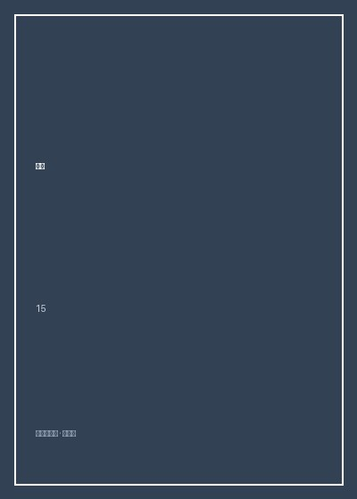

财经

总体观点
《财经》（精选调查报道集）汇聚了由胡舒立带领的调查记者团队在中国资本市场转型期写下的一系列震动朝野的重磅调查报道。作为中国新闻专业主义与财经深度监督报道的开山旗帜，该团队在长达十余年的时间里，以极其严苛的事实核查、过硬的财务分析与无所畏惧的职业勇气，充当了中国资本市场上最锐利的‘啄木鸟’。
书中收录了《基金黑幕》《银广夏陷阱》《谁的鲁能》《庄家吕梁》等一系列载入中国当代经济史册的标志性调查。记者们冒着人身安全威胁与巨大的诉讼压力，通过查阅上万份海关报关单、走访偏远工厂、核对上千笔银行对账流水，彻底揭穿了上市公司虚构数十亿暴利、操纵股价、侵吞国有资产的惊天骗局，直接推动了中国证券监管制度、刑法修订与现代市场经济法治秩序的建立。
核心观点
-
1. 调查报道作为现代市场经济必不可少的免疫系统
真实透明的信息是资本市场有效配置资源的生命线，媒体监督能够刺破权力与资本媾和的黑幕，维护公平底线。
《银广夏陷阱》发表前银广夏股价高达38元被奉为中国蓝筹之神，调查见报后连续十几个跌停，假账神话瞬间轰塌。 -
2. 穿透式财务核查：从物理证据推翻虚假财务账本
上市公司的虚假财报在纸面上看似天衣无缝，但只要追溯其真实的物流、电费、海关报关单等物理凭证就会露出破绽。
调查记者远赴天津海关蹲点数月，逐笔比对银广夏所谓的‘萃取产品天价出口报关单’，发现其报关总额甚至不足宣传的百分之一。 -
3. 机构投资者的原罪：对倒拉抬与背叛信托责任
本应作为市场理性中坚力量的公募基金，如果在缺乏严密监管的情况下与庄家联手，就会沦为合谋收割散户的吸血工具。
《基金黑幕》揭露十家主力基金管理公司通过‘对倒’、‘倒仓’人为制造虚假成交量拉抬净值，震惊监管高层并引发行业大洗牌。 -
4. 庄家资本运作的穷途末路与崩盘必然性
依靠高成本民间拆借资金操纵单一股票股价的做庄模式，一旦资金链断裂，必然引发毁灭性的流动性崩盘雪崩。
庄家吕梁操控中科创业股价长达数年，在融资盘资金链断裂后连续跌停，吕梁潜逃，涉案机构血本无归。 -
5. 独立专业的新闻精神是社会公正的坚强守望者
面对资本诱惑与强权施压，调查记者坚守事实求是、多方交叉核证的职业操守，展现了知识分子的道义担当。
面对上市公司开出的天价公关费封口诱惑与黑道恐吓威胁，团队坚决拒绝任何妥协，准时将数万字铁证见报。
全书结构
-
第一辑 庄家吕梁：中科创业崩盘背后的资本坐庄
详尽还原民国以来最大的股票操纵案，揭开神秘庄家吕梁如何利用信托与机构资金操纵中科创业的内幕。
中科创业盘面上诡异的对倒挂单被记者逐笔记录，还原庄家操盘手在五星级酒店包房里用二十部电话指挥下单的疯狂现场。 -
第二辑 基金黑幕：净值神话下的对倒操纵
基于中国资本市场首份权威内部研究报告，曝光基金管理公司集体违规操作、背弃基民信任的行业丑闻。
用详实的交易分时图与分仓数据，铁证如山地展示基金之间如何利用‘倒仓’制造漂亮的季度收益排名。 -
第三辑 银广夏陷阱：现代神话破灭与财务造假大起底
中国财经新闻史上里程碑式的调查，记者跨越宁夏、天津与北京，刺破银广夏超临界萃取技术的天大谎言。
记者深入宁夏银川萃取车间，发现厂房长满杂草、机器布满蛛网，根本无法进行大规模工业化萃取生产。 -
第四辑 权力与寻租：改制与资本腾挪调查
追踪涉及数千亿资产的大型企业产权改制黑幕，揭露各路资本掮客如何巧立名目侵吞公共利益。
层层抽丝剥茧梳理错综复杂的离岸空壳公司网络，揭开实际控制人隐藏在多层股权穿透背后的真实身份。 -
第五辑 新闻专业主义：守望资本市场法治与公众知情权
胡舒立团队总结调查报道的采编规范、法律边界与职业伦理，呼吁建立健全的信披制度与现代商业文明。
回顾多次面临名誉权诉讼的庭审交锋，以严格的三方信源交叉印证为武器，赢得中国新闻史上的全面法治胜利。